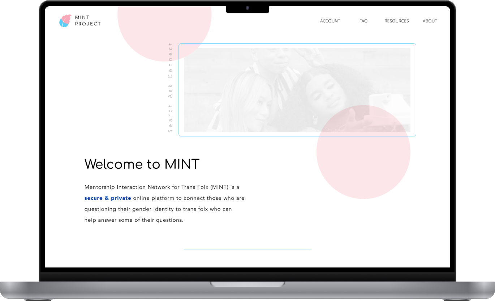
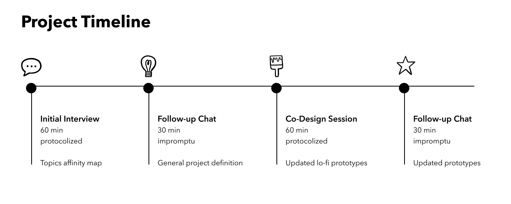
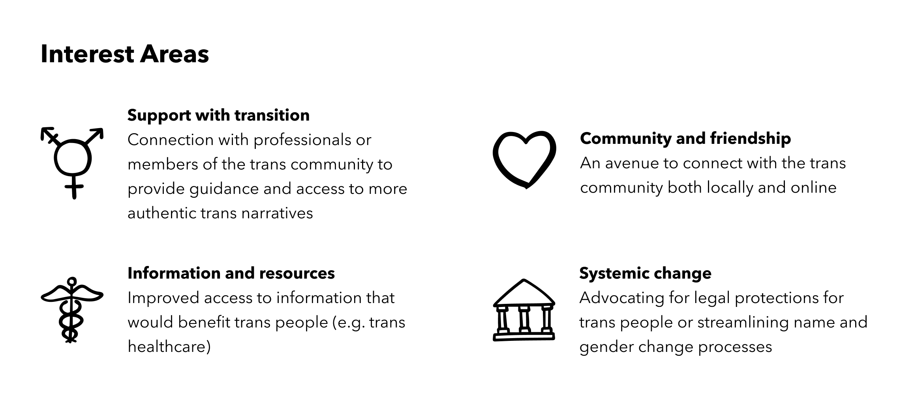
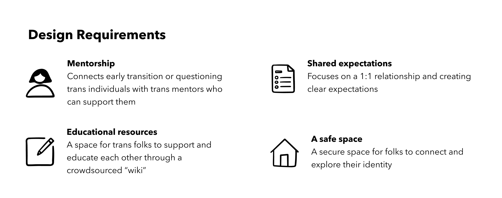
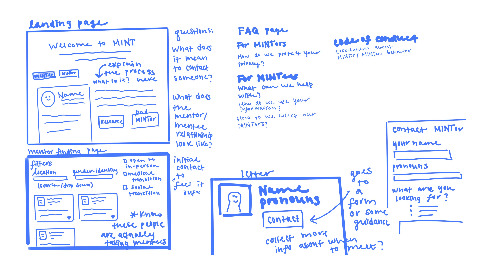
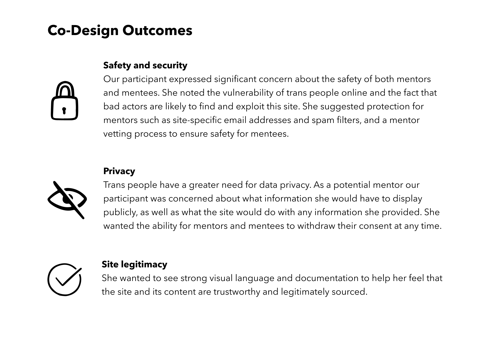

Trans Mentorship Network
Co-designing an online platform to foster connection among trans and questioning people

Overview
Team: Andy Moon, Hailee Kenney, Nguyen Tran
Project Timeline: 8 Weeks
Number of Participants: 1
Research Methods: Qualitative interviews, co-design
Individuals of transgender experience face significant hardships in multiple aspects of daily life, and in recent years, trans issues have become a lightning rod in the United States. As rights and access are being eroded, community support and solutions are becoming more important than ever. In this project, we wanted to work with our co-design participant, a trans woman in her late 20s, to explore how we could design a solution to help trans people thrive, one that would authentically center the trans experience.
Over the course of the project we worked closely with our participant to get her feedback on design progress, including through an initial interview and a co-design session. We worked with her to define a solution that she would find valuable, and shaped the design collaboratively. Ultimately we designed an early prototype for an online platform that could connect trans and questioning individuals with trans mentors who could support them. As we began to explore this space, questions around security and privacy became central to our design, and we focused on a solution that could provide an open and welcoming community while simultaneously protecting its members, who have greater needs for anonymity and data privacy and are at increased risk for harassment.
Initial Interview
We began our process with an initial hour long interview with our participant to learn more about her and her experience as a trans person. We asked about her transition, self discovery, barriers she faced, as well as which experiences were challenging and which were affirming. We also asked her what was missing from her experience that could have made it more positive. Overall we identified four major themes from the interview.
Based on the themes identified in our interview, we created an affinity map of areas to explore and asked our participant to mark the top three that interested her most.
Ideation
Based on these interest areas and themes from the initial interview, we worked with our participant to generate the following design requirements.
From here we landed on the idea of a website that could connect new and questioning trans individuals with a trans “mentor” (someone who is further along in their trans journey) to help answer questions and provide support. This was based on several things raised by our participant, namely feelings of confusion early in her transition and a longing for support and community she wasn’t sure how to find. We chose to focus on a website that could connect people to meet either remotely or in-person depending on their preference, since, as our participant identified, some people may be geographically isolated, or may not feel safe with one option or the other. And we chose to connect trans people with each other directly, as high barriers to official resources and rampant institutional transphobia can require a knowing ally to help one navigate. A secondary aspect of this site would be a crowdsourced “wiki” that mentors could contribute to, providing easily accessible resources for both the trans community and potential cis allies.
To assist with the ideation process and help a more concrete solution take shape, I sketched storyboards and low fidelity site mockups.

Co-Design

In order to make the most of our 60 minute co-design session, we wanted to come with a protocol and materials prepared. In addition to the sketches and storyboards, I also created some low fidelity wireframes to help communicate a potential workflow. As the session facilitator, I walked the participant through the materials we had prepared to show her where we were at with the solution. Afterwards, as we talked with our participant, I sketched out her ideas on an iPad, and we worked together to produce sketches that best represented the design she envisioned.
There were several major themes that were highlighted throughout the co-design session
Final Design
Our final design was The MINT (Mentorship Interaction Network for Trans Folx) Project: a secure and private online platform to connect those who are questioning their gender identity to trans individuals who can help answer some of their questions.
While we kept the overall design of a site where individuals can connect with mentors and view crowd-sourced resources, we focused much of our remaining effort on addressing the privacy and safety concerns raised by our participant in the co-design session. One part of this was identifying and adding features such as automated message filtering and the ability to delete all personal data from the site. But at this point the scope of the project had grown significantly, and so in order to create a meaningful prototype we focused on generating content that would define how the service worked and how it protected community members. Based on feedback from our participant, I outlined and wrote an FAQ that defined the purpose of the site, how it works, and how it protects both mentors and mentees. From said feedback I also helped my teammate Nguyen create a Code of Conduct governing the mentor-mentee relationship.
Reflection
Although this project is now concluded, here are some important takeaways and things we would consider were we to continue with this work.
Lessons Learned
- Enhancing participant agency. Throughout the project we worked to treat our participant as an equal member of the design team by including her in our recurring meetings and giving her the ability to provide asynchronous feedback. The team and our participant felt that this created a stronger working relationship, and it would be interesting to explore further how we could have enhanced her agency in the project. On the flip side, while our participant was happy to volunteer her time, questions of fair compensation remain with this level of involvement.
- Begin with a multidisciplinary team. As we began to tackle issues like security and safety and to write a code of conduct, it became clear that there were scenarios that were far outside our area of expertise that needed to be addressed. For example, what is the burden of reporting a mental health crisis for mentors or mentees? When creating a support network for a vulnerable and traditionally underserved population, there were questions we were not equipped to answer as designers.
Next Steps
- Service design. By the end of the design process, it became clear that what we were really designing was a service with a complex ecosystem. It would be valuable to step back and take a different approach, perhaps with a service blueprint or ecosystem map, both of which would be more appropriate for what we were designing.
- Bring in a more diverse set of trans voices. Designing for a whole community with only one participant is challenging, and at some point not appropriate. The trans experience is incredibly varied, and particularly for something meant to create connections, it would be necessary to co-design with more than one person.
- Should minors be included in this project? In some cases they may benefit the most, but it complicates things significantly. Is it even possible to include them? How would we go about this?
Overall, a very interesting question that came out of this project is, how do you create a community that is open enough to be discoverable for people who may feel isolated and in need of community, yet still safe enough for a population whose very existence is political? And especially in online spaces, which are prone to harassment and bad actors? It may be valuable to explore this question further, through this project or another lens.